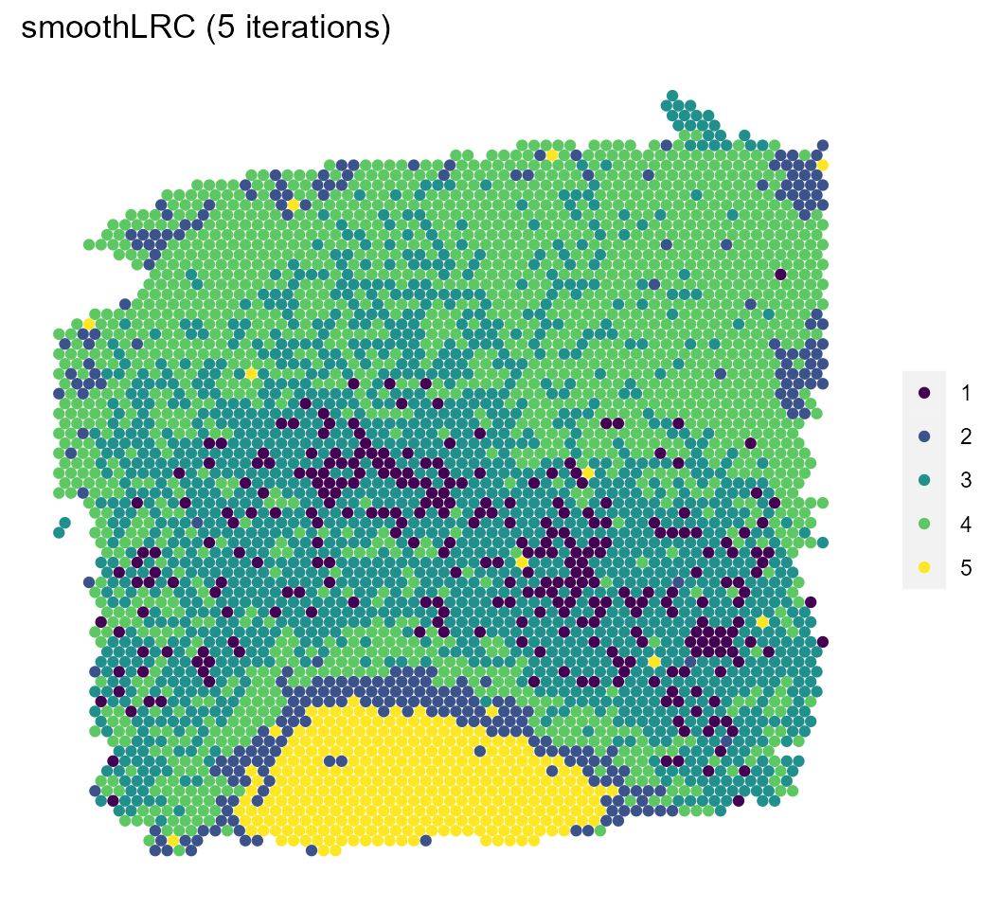

Introduction to smoothLRC
Alexander White, Pengtao Dang, Changlin Wan, Anru Zhang, Chi Zhang, Sha Cao
2022-07-24
Source:vignettes/smoothLRC.Rmd
smoothLRC.RmdSetup
smoothLRC is a novel tool for clustering spatial transcriptomics data. This technique utilizes a regularized maximum likelihood estimator to approximate the noisy observed expression matrix to incorporate spatial information and address expression dropout. This approximation under the Poisson distribution is both low-rank and spatially smooth. Furthermore, smoothLRC enables spatial clustering by modeling a low-dimensional representation of the count-based gene expression matrix. Thus, the approach encourages neighboring cells to belong to the same cluster via penalized matrix decomposition.
smoothLRC employs the SummarizedExperiment framework for spatial transcriptomics data. In this example, we will cluster a dorsolateral prefrontal cortex (DLPFC) collected and annotated by Maynard et al. (2020).
Load Data
Using the spatialLIBD package, we’ll load sample 151671 from the DLPFC data.
sample <- "151671"
sce <- spatialLIBD::fetch_data(type = "sce")
sce <- sce[, sce$sample_name == sample]Clustering
Next, we’ll use smoothLRC to perform low-rank clustering on the data. We recommend setting the maximum number of iterations to a large value (e.g. 1,000). smoothLRC will add the clustering results to the colData and the model results to the metadata of the SummarizedExperiment object.
sce <- smooth_lrc(sce, lambda = 5, k = 30, n_clust = 5, maxiter = 5)
#> [1] "Initializing components..."
#> [1] "Running smoothLRC..."
#> iteration: 1 | convergence: 0.517552 | 0.0777191 | 1
#> iteration: 2 | convergence: 0.258088 | 0.0619568 | 0.0124418
#> iteration: 3 | convergence: 0.224198 | 0.0678516 | 0.0140945
#> iteration: 4 | convergence: 0.198246 | 0.0673172 | 0.0170241
#> iteration: 5 | convergence: 0.190463 | 0.0720095 | 0.0208061
#> [1] "Clustering right singular vectors..."
#> [1] "Done!"Visualization
Lastly, we’ll visualize the results of both the model and a pre-computed model with a larger number of iterations and compare them with the manual annotations.
clust_1000 <- tibble(read.csv("151671.csv", colClasses = "factor"))
col_data <- colData(sce)[,c("row","col","smooth_cluster", "layer_guess_reordered")] %>%
as_tibble() %>%
bind_cols(clust_1000)
col_data %>%
ggplot(aes(x = col, y = -row, color = smooth_cluster)) +
geom_point(size = 1.5) +
ggtitle("smoothLRC (5 iterations)") +
scale_color_viridis_d() +
theme(panel.grid = element_blank(),
axis.title = element_blank(),
axis.text = element_blank(),
axis.ticks = element_blank(),
legend.title=element_blank(),
panel.background = element_blank())
col_data %>%
ggplot(aes(x = col, y = -row, color = smooth_cluster_1000)) +
geom_point(size = 1.5) +
ggtitle("smoothLRC (1000 iterations)") +
scale_color_viridis_d() +
theme(panel.grid = element_blank(),
axis.title = element_blank(),
axis.text = element_blank(),
axis.ticks = element_blank(),
legend.title=element_blank(),
panel.background = element_blank())
col_data %>%
ggplot(aes(x = col, y = -row, color = layer_guess_reordered)) +
geom_point(size = 1.5) +
ggtitle("Manual Annotation") +
scale_color_viridis_d() +
theme(panel.grid = element_blank(),
axis.title = element_blank(),
axis.text = element_blank(),
axis.ticks = element_blank(),
legend.title=element_blank(),
panel.background = element_blank())Reproducibility
sessionInfo()
#> R version 4.1.3 (2022-03-10)
#> Platform: x86_64-w64-mingw32/x64 (64-bit)
#> Running under: Windows 10 x64 (build 19044)
#>
#> Matrix products: default
#>
#> locale:
#> [1] LC_COLLATE=English_United States.1252
#> [2] LC_CTYPE=English_United States.1252
#> [3] LC_MONETARY=English_United States.1252
#> [4] LC_NUMERIC=C
#> [5] LC_TIME=English_United States.1252
#>
#> attached base packages:
#> [1] stats4 stats graphics grDevices utils datasets methods
#> [8] base
#>
#> other attached packages:
#> [1] SummarizedExperiment_1.24.0 Biobase_2.54.0
#> [3] GenomicRanges_1.46.1 GenomeInfoDb_1.30.1
#> [5] IRanges_2.28.0 S4Vectors_0.32.4
#> [7] BiocGenerics_0.40.0 MatrixGenerics_1.6.0
#> [9] matrixStats_0.62.0 dplyr_1.0.9
#> [11] ggplot2_3.3.6 smoothLRC_0.99.0
#>
#> loaded via a namespace (and not attached):
#> [1] utf8_1.2.2 R.utils_2.12.0
#> [3] tidyselect_1.1.2 RSQLite_2.2.14
#> [5] AnnotationDbi_1.56.2 htmlwidgets_1.5.4
#> [7] grid_4.1.3 BiocParallel_1.28.3
#> [9] DropletUtils_1.14.2 munsell_0.5.0
#> [11] ScaledMatrix_1.2.0 codetools_0.2-18
#> [13] ragg_1.2.2 DT_0.23
#> [15] withr_2.5.0 colorspace_2.0-3
#> [17] filelock_1.0.2 config_0.3.1
#> [19] highr_0.9 knitr_1.39
#> [21] rstudioapi_0.13 SingleCellExperiment_1.16.0
#> [23] shinyWidgets_0.7.1 labeling_0.4.2
#> [25] GenomeInfoDbData_1.2.7 bit64_4.0.5
#> [27] farver_2.1.1 rhdf5_2.38.1
#> [29] rprojroot_2.0.3 vctrs_0.4.1
#> [31] generics_0.1.3 xfun_0.31
#> [33] BiocFileCache_2.2.1 R6_2.5.1
#> [35] doParallel_1.0.17 ggbeeswarm_0.6.0
#> [37] rsvd_1.0.5 locfit_1.5-9.6
#> [39] fields_14.0 bitops_1.0-7
#> [41] rhdf5filters_1.6.0 cachem_1.0.6
#> [43] DelayedArray_0.20.0 assertthat_0.2.1
#> [45] promises_1.2.0.1 BiocIO_1.4.0
#> [47] scales_1.2.0 beeswarm_0.4.0
#> [49] gtable_0.3.0 beachmat_2.10.0
#> [51] benchmarkmeData_1.0.4 spam_2.9-0
#> [53] rlang_1.0.4 systemfonts_1.0.4
#> [55] scatterplot3d_0.3-41 rtracklayer_1.54.0
#> [57] lazyeval_0.2.2 BiocManager_1.30.18
#> [59] yaml_2.3.5 httpuv_1.6.5
#> [61] tools_4.1.3 usethis_2.1.6
#> [63] SpatialExperiment_1.4.0 ellipsis_0.3.2
#> [65] jquerylib_0.1.4 RColorBrewer_1.1-3
#> [67] sessioninfo_1.2.2 Rcpp_1.0.9
#> [69] sparseMatrixStats_1.6.0 zlibbioc_1.40.0
#> [71] purrr_0.3.4 RCurl_1.98-1.7
#> [73] viridis_0.6.2 cowplot_1.1.1
#> [75] ggrepel_0.9.1 fs_1.5.2
#> [77] magrittr_2.0.3 data.table_1.14.2
#> [79] magick_2.7.3 pkgload_1.3.0
#> [81] mime_0.12 evaluate_0.15
#> [83] xtable_1.8-4 XML_3.99-0.10
#> [85] mclust_5.4.10 sparsesvd_0.2
#> [87] gridExtra_2.3 compiler_4.1.3
#> [89] scater_1.22.0 tibble_3.1.7
#> [91] maps_3.4.0 crayon_1.5.1
#> [93] R.oo_1.25.0 htmltools_0.5.2
#> [95] later_1.3.0 tidyr_1.2.0
#> [97] DBI_1.1.3 ExperimentHub_2.2.1
#> [99] dbplyr_2.2.1 rappdirs_0.3.3
#> [101] Matrix_1.4-1 cli_3.3.0
#> [103] R.methodsS3_1.8.2 benchmarkme_1.0.8
#> [105] parallel_4.1.3 dotCall64_1.0-1
#> [107] golem_0.3.3 pkgconfig_2.0.3
#> [109] pkgdown_2.0.6 GenomicAlignments_1.30.0
#> [111] plotly_4.10.0 scuttle_1.4.0
#> [113] xml2_1.3.3 roxygen2_7.2.0
#> [115] foreach_1.5.2 vipor_0.4.5
#> [117] bslib_0.4.0 dqrng_0.3.0
#> [119] XVector_0.34.0 attempt_0.3.1
#> [121] stringr_1.4.0 digest_0.6.29
#> [123] Biostrings_2.62.0 rmarkdown_2.14
#> [125] edgeR_3.36.0 DelayedMatrixStats_1.16.0
#> [127] restfulr_0.0.15 curl_4.3.2
#> [129] shiny_1.7.1 Rsamtools_2.10.0
#> [131] rjson_0.2.21 lifecycle_1.0.1
#> [133] jsonlite_1.8.0 Rhdf5lib_1.16.0
#> [135] BiocNeighbors_1.12.0 spatialLIBD_1.6.5
#> [137] desc_1.4.1 viridisLite_0.4.0
#> [139] limma_3.50.3 fansi_1.0.3
#> [141] pillar_1.7.0 lattice_0.20-45
#> [143] KEGGREST_1.34.0 fastmap_1.1.0
#> [145] httr_1.4.3 interactiveDisplayBase_1.32.0
#> [147] glue_1.6.2 FNN_1.1.3.1
#> [149] png_0.1-7 iterators_1.0.14
#> [151] Polychrome_1.5.1 BiocVersion_3.14.0
#> [153] bit_4.0.4 stringi_1.7.6
#> [155] sass_0.4.1 HDF5Array_1.22.1
#> [157] blob_1.2.3 textshaping_0.3.6
#> [159] BiocSingular_1.10.0 AnnotationHub_3.2.2
#> [161] memoise_2.0.1 irlba_2.3.5